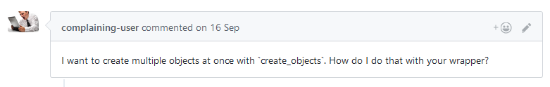

class: center, middle # Mistakes to avoid when writing a Rust wrapper around a C library A collection of mistakes people often make. <br /> <small>And that I also made and still make.<br /><small>In no specific order.</small></small> <div style="position: absolute; bottom: 5%; right: 5%;"> .right[ twitter.com/tomaka17 <br /> github.com/tomaka <img src="github.png" alt="GitHub" height="16" /><br /> ] </div> --- ## Mistake #1 # Not catching Rust panics within callbacks called by the C library .nastiness[<span style="color: #00BB00;">low</span>] C code is not designed to handle Rust panics.<br /> This is dangerous: ```rust extern "C" fn my_callback() { user_provided_function_that_may_panic(); } c_library_set_callback(my_callback); ``` --- ## Mistake #1 # Not catching Rust panics within callbacks called by the C library .nastiness[<span style="color: #00BB00;">low</span>] Instead: ```rust use std::panic; extern "C" fn my_callback() { let result = panic::catch_unwind(|| { user_provided_function_that_may_panic(); }); match result { // ... } } ``` --- ## Mistake #2 # Assuming that trait implementations are bug-free .nastiness[<span style="color: #BBBB00;">medium</span>] Try to spot the problem: ```rust extern { // `pointer` must be an array of `len` elements fn foo(pointer: *const c_char, len: size_t); } pub fn foo_wrapper<T>(array_arg: &T) where T: Deref<[u8]> { unsafe { foo( array_arg.as_ptr() as *const c_char, array_arg.len() ); } } ``` --- ## Mistake #2 # Assuming that trait implementations are bug-free .nastiness[<span style="color: #BBBB00;">medium</span>] The user could create a type named `MaliciousPointer` and call `foo_wrapper` with it! ```rust struct MaliciousPointer { vec1: Vec<u8>, vec2: Vec<u8>, } impl Deref for MaliciousPointer { type Target = [u8]; fn deref(&self) -> &[u8] { if random() < 0.5 { &self.vec1 } else { &self.vec2 } } } ``` --- ## Mistake #2 # Assuming that trait implementations are bug-free .nastiness[<span style="color: #BBBB00;">medium</span>] The user could create a type named `MaliciousPointer` and call `foo_wrapper` with it! ```rust pub fn foo_wrapper<T: Deref<[u8]>>(array_arg: &T) { unsafe { foo( // could be a pointer to the first Vec ... array_arg.as_ptr() as *const c_char, // ... but with the length of the second Vec array_arg.len() ); } } ``` Ouch! ??? Important to note. In this example, it was a *malicious* implementation of `Deref`. In a real program, it could be an actual bug that becomes potentially exploitable. --- ## Mistake #3 # Trying to write a high-level abstraction first People will complain about features of the C library that you don't expose. ```rust extern { // Creates objects, and fills `out` with their IDs. fn create_objects(num_objects: usize, out: *mut i32); } pub struct Object(i32); impl Object { pub fn new() -> Object { let mut id = 0; create_objects(1, &mut id); Object(id) } } ``` Outcome:  --- ## Mistake #3 # Trying to write a high-level abstraction first Advice: - Write the closest-to-the-metal API possible while still remaining safe. - Add additional abstractions over this API afterwards. - Optimize the higher-level features if needed. ```rust impl Object { // Close to the metal pub fn create_objects(num: usize) -> impl Iterator<Item = Object> { // ... } // Easy to use pub fn new() -> Object { Object::create_objects(1).next().unwrap() } } ``` --- ## Mistake #4 # Ignoring the problem of leak safety .nastiness[<span style="color: #BB0000;">high</span>] Spot the problem: ```rust extern { fn lock_foo(foo: *mut Foo); fn unlock_foo(foo: *mut Foo); // Must not be used while `Foo` is locked. fn do_smth(foo: *mut Foo); } ``` ```rust pub struct FooWrapper { /* ... */ } impl FooWrapper { pub fn do_something(&mut self) { /* call do_smth */ } pub fn lock(&mut self) -> FooLock { /* calls lock_foo */ } } pub struct FooLock<'a> { foo: &'a mut FooWrapper } impl Drop for FooLock { fn drop(&mut self) { /* calls unlock_foo */ } } ``` --- ## Mistake #4 # Ignoring the problem of leak safety .nastiness[<span style="color: #BB0000;">high</span>] From the point of view of the user: ```rust fn use_foo(foo: &mut Foo) { let _lock = foo.lock(); //foo.do_something(); // compilation error } ``` This API is safe, right? No, because you can bypass the borrow! ```rust fn use_foo(foo: &mut Foo) { { let lock = foo.lock(); mem::forget(lock); } // foo is still locked at this point foo.do_something(); // compiles and runs, but bad! } ``` Rule: Always consider that your destructors may not get called. ??? There is a technique called "pre-pooping your pants". --- ## Mistake #5 # Forgetting about hidden global variables .nastiness[<span style="color: #BBBB00;">medium</span>] Example: *OpenAL*, a sound playback library. ```rust extern { // Sets the current context. Only one context can be current // at any given time. All commands apply to the current context. fn alcMakeContextCurrent(ctxt: *mut ALCcontext) -> ALCboolean; } ``` This is a global variable hidden inside the OpenAL library! This design is not thread-safe (at all). None of the possible work-arounds is perfectly safe.<br /> *OpenAL* **cannot** be wrapped safely, because of its design. <hr /> Other examples: OpenGL, POSIX signals, Xlib (`XSetErrorHandler`), ... ??? In order to use OpenAL, you first create what is called a "context" and set this context as current. Then all the functions that you call apply on the current context. If you think about it, the variable that stores the "current context" is essentially a global variable. This is a problematic design, because two threads can't safely operate on two different contexts. If you're performing some operations on thread 1, and in the meanwhile thread 2 changes the current context by calling `alcMakeContextCurrent` then it will change the behaviour of thread 1. There are work-arounds, but none of them is perfectly safe. So, there's just no solution. OpenAL cannot be wrapped safely. Many libraries have this kind of design and can be safely wrapped around, but some can't. Be aware of this. --- ## Mistake #6 # Using lifetimes for long-lived objects Example situation: a C library gives you two objects of type `A` and `B`, and states that `A` must outlive `B`. The common solution: store a `&A` inside of `B`. ```rust struct B<'a> { parent: &'a A, } ``` --- ## Mistake #6 # Using lifetimes for long-lived objects However using a lifetime is more restrictive than just the concept of "outlives". ```rust // Code written by someone trying to use your library struct HighLevelCode { parent: A, child: B<???>, // impossible to write } ``` Advice: - Only use lifetimes for temporary objects (such as locks or accessors). - Use `Arc`/`Rc` for dependencies between long-lived objects. --- ## Mistake #7 # Reading primitives from memory without checking .nastiness[<span style="color: #00BB00;">low</span>] Concerned: `f32`s, `f64`s, `bool`s and `char`s ```rust // can be undefined behaviour! let b: char = unsafe { mem::uninitialized() }; // actually undefined behaviour (bad!) let b: f32 = unsafe { mem::transmute(0x7f800001) }; ``` Rules: - `bool`s must always be either `0` or `1` <small>(actually, this is unspecified)</small>. - `char`s must be a valid unicode scalar value</small>. - Floating-points must never contain signalling NaNs. ??? By extension, arrays and structs that contain these types are also concerned. You must make sure that these rules are enforced when you transmute. --- ## Mistake #8 # Assuming that structs and enums have a certain layout .nastiness[<span style="color: #BBBB00;">medium</span>] Example: ```rust struct Foo { a: u8, b: u32, } ``` The compiler can optimize this struct's layout, and `a` may even end up being **after** `b` in memory. Use `#[repr(C)]` to force the layout. ```rust #[repr(C)] struct Foo { a: u8, b: u32, } ``` ??? The compiler will warn you if you try to call an external function with a struct that isn't `repr(C)`. But it won't warn you if you perform transmutes or pointer casts. --- ## Mistake #9 # Not using your own library Using your own library for a large project is the best way to find bugs and flaws in the API. Having a large project that uses a library acts as a giant test suit. --- class: center, middle # Conclusion **Read the rustonomicon: https://doc.rust-lang.org/nomicon/** If you feel overwhelmed, think about the fact that safe Rust protects against all these problems. Take inspiration from the API guidelines:<br />https://rust-lang-nursery.github.io/api-guidelines/ --- class: center, middle # Thank you <div style="position: absolute; bottom: 5%; right: 5%;"> .right[ twitter.com/tomaka17 <br /> github.com/tomaka <img src="github.png" alt="GitHub" height="16" /><br /> ] </div> <div style="position: absolute; bottom: 5%; left: 5%;"> .left[ <!--<img src="patreon.svg" alt="Patreon.com" height="16" /> patreon.com/tomaka<br />--> <small><small>(by the way, I'm looking for a job)</small></small> ] </div> ??? That's it! Thank you!